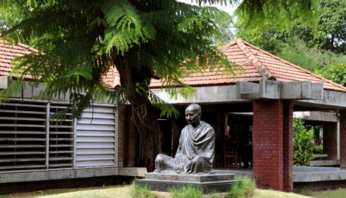

AHMEDABAD

Sabarmati Ashram (also known as Gandhi Ashram, Harijan Ashram, or Satyagraha Ashram) is
located in the Sabarmati suburb of Ahmedabad, Gujarat, adjoining the Ashram Road, on the
banks of the River Sabarmati, four miles from the town hall. This was one of the residences
of Mohandas Karamchand Gandhi, generally called Mahatma Gandhi, who lived there for about
twelve years along with his wife, Kasturba Gandhi.
 The Sidi Saiyyed Mosque, popularly known as Sidi Saiyyid ni Jali locally, built in 1573, is one
of the most famous mosques of Ahmedabad, Gujarat, India. As attested by the marble tablet fixed
on the wall of the mosque, it was built by Sidi Saiyyid in the retinue of Bilal Jhajar Khan, general
in the army of the last Sultan Shams-ud-Din Muzaffar Shah III of the Gujarat Sultanate.
The Sidi Saiyyed Mosque, popularly known as Sidi Saiyyid ni Jali locally, built in 1573, is one
of the most famous mosques of Ahmedabad, Gujarat, India. As attested by the marble tablet fixed
on the wall of the mosque, it was built by Sidi Saiyyid in the retinue of Bilal Jhajar Khan, general
in the army of the last Sultan Shams-ud-Din Muzaffar Shah III of the Gujarat Sultanate.